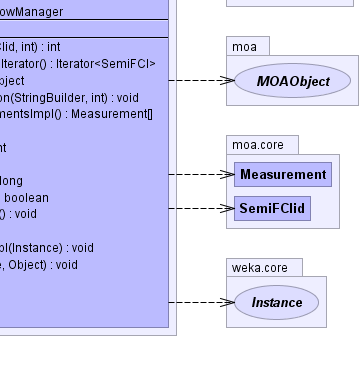

public class IncMine extends AbstractLearner implements java.util.Observer
|  |
| Modifier and Type | Field and Description |
|---|---|
protected long |
evaluateStartTime |
protected FCITable |
fciTable |
moa.options.IntOption |
fixedSegmentLengthOption |
moa.options.IntOption |
maxItemsetLengthOption |
protected int[] |
minsup |
moa.options.FloatOption |
minSupportOption |
protected boolean |
preciseCPUTiming |
protected double |
r |
moa.options.FloatOption |
relaxationRateOption |
protected double |
sigma |
protected SlidingWindowManager |
swm |
static int |
windowSize |
moa.options.IntOption |
windowSizeOption |
learnerRandom, modelContext, randomSeed, randomSeedOption, trainingWeightSeenByModel| Constructor and Description |
|---|
IncMine() |
| Modifier and Type | Method and Description |
|---|---|
int |
computeK(SemiFCIid id,
int startK)
Calls computeK method the passed semiFCI and deletes it if no longer holds
the conditions to be maintained in the window
|
java.util.Iterator<SemiFCI> |
getApproximateFCIIterator() |
moa.MOAObject |
getModel() |
void |
getModelDescription(java.lang.StringBuilder out,
int indent) |
protected moa.core.Measurement[] |
getModelMeasurementsImpl() |
int |
getNAdded() |
int |
getNRemoved() |
int |
getNumFCIs() |
long |
getUpdateTime() |
boolean |
isRandomizable() |
void |
resetLearningImpl() |
java.lang.String |
toString() |
void |
trainOnInstanceImpl(weka.core.Instance inst) |
void |
update(java.util.Observable o,
java.lang.Object arg)
Update the FCITable and the InvertedFCIIndex to keep semiFCIs up to date
|
contextIsCompatible, copy, getAttributeNameString, getAWTRenderer, getClassLabelString, getClassNameString, getDescription, getModelContext, getModelMeasurements, getNominalValueString, getPurposeString, getSubLearners, prepareForUseImpl, resetLearning, setModelContext, setRandomSeed, trainingHasStarted, trainingWeightSeenByModel, trainOnInstancediscoverOptionsViaReflection, getCLICreationString, getOptions, getPreparedClassOption, prepareClassOptions, prepareForUse, prepareForUseclone, equals, finalize, getClass, hashCode, notify, notifyAll, wait, wait, waitpublic moa.options.IntOption windowSizeOption
public moa.options.IntOption maxItemsetLengthOption
public moa.options.FloatOption minSupportOption
public moa.options.FloatOption relaxationRateOption
public moa.options.IntOption fixedSegmentLengthOption
public static int windowSize
protected double r
protected double sigma
protected FCITable fciTable
protected SlidingWindowManager swm
protected int[] minsup
protected boolean preciseCPUTiming
protected long evaluateStartTime
public void resetLearningImpl()
resetLearningImpl in class AbstractLearnerpublic void trainOnInstanceImpl(weka.core.Instance inst)
trainOnInstanceImpl in class AbstractLearnerprotected moa.core.Measurement[] getModelMeasurementsImpl()
getModelMeasurementsImpl in class AbstractLearnerpublic void getModelDescription(java.lang.StringBuilder out,
int indent)
getModelDescription in class AbstractLearnerpublic boolean isRandomizable()
isRandomizable in interface Learnerpublic void update(java.util.Observable o,
java.lang.Object arg)
update in interface java.util.Observero - arg - public int computeK(SemiFCIid id, int startK)
id - id of the semiFCIstartK - intial k valuepublic int getNumFCIs()
public long getUpdateTime()
public int getNAdded()
public int getNRemoved()
public java.util.Iterator<SemiFCI> getApproximateFCIIterator()
public java.lang.String toString()
toString in class moa.AbstractMOAObject